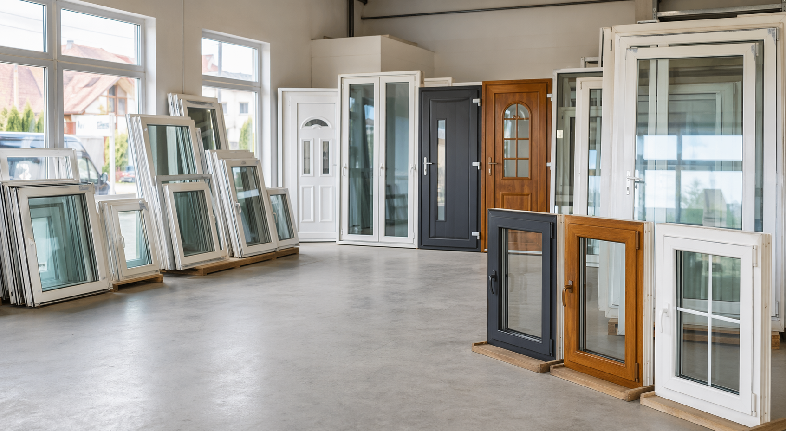

Ferestre PVC
Simple, duble sau cu ochi fix, potrivite pentru camere, bai, holuri si anexe.

Stoc local pentru renovari rapide
Ferestre PVC, usi balcon si usi intrare. Trimite masurile, iar noi verificam rapid variantele disponibile.
Alegere fara pierdere de timp
Pentru termopane second hand, conteaza dimensiunea, deschiderea, culoarea, starea si disponibilitatea. Verificarea incepe simplu: alegi tipul de produs, trimiti masurile si primesti variantele apropiate din stoc.
Produse disponibile
Simple, duble sau cu ochi fix, potrivite pentru camere, bai, holuri si anexe.
Modele cu geam mare, prag jos sau rama clasica, pentru apartamente si case.
Panouri PVC, sticla mata sau modele mixte, in functie de stocul actual.
Alb clasic, antracit, stejar auriu, nuc si alte finisaje cand sunt disponibile.
Sunt afisate toate produsele din lista.
Varianta buna pentru renovari rapide, garaje, camere secundare sau spatii tehnice.
Potrivita cand ai nevoie de lumina naturala si acces catre terasa sau balcon.
Finisaje stejar sau nuc pentru case, cabane, anexe si fatade cu tonuri naturale.
Modele compacte pentru spatii comerciale mici, magazii sau intrari secundare.
De ce second hand
Produsele second hand pot reduce costul renovarii, mai ales pentru spatii unde nu e nevoie de comanda noua personalizata.
Cand piesa exista pe stoc si dimensiunea este buna, decizia poate fi mult mai rapida decat o comanda de fabrica.
Stocul se schimba: pot aparea usi, ferestre, culori si profile diferite, utile pentru proiecte mici sau reparatii punctuale.
Un produs bun poate fi refolosit intr-un alt proiect, in loc sa ajunga direct la deseuri.
Proces simplu
Latime, inaltime si cateva poze din interior si exterior sunt suficiente pentru prima verificare.
Fereastra, usa balcon, usa intrare, culoare preferata si sensul de deschidere.
Comparam masurile cu stocul disponibil si iti trimitem optiunile apropiate.
Dupa confirmare, produsul se poate pregati pentru ridicare sau livrare locala, daca este disponibila.
Cerere rapida
Completezi cateva detalii si pregatesti un mesaj pe care il poti trimite direct pe WhatsApp.
Culori si finisaje
Cel mai usor de potrivit pentru apartamente si renovari simple.
Aspect modern pentru fatade gri, garduri metalice si case noi.
Finisaj cald, potrivit pentru case, terase si spatii rustice.
Ton inchis pentru usi si profile cu prezenta vizuala mai puternica.
Contact
Trimite dimensiunile, cateva poze si culoarea dorita. Vei primi variantele apropiate din stoc, cu detalii despre stare si disponibilitate.